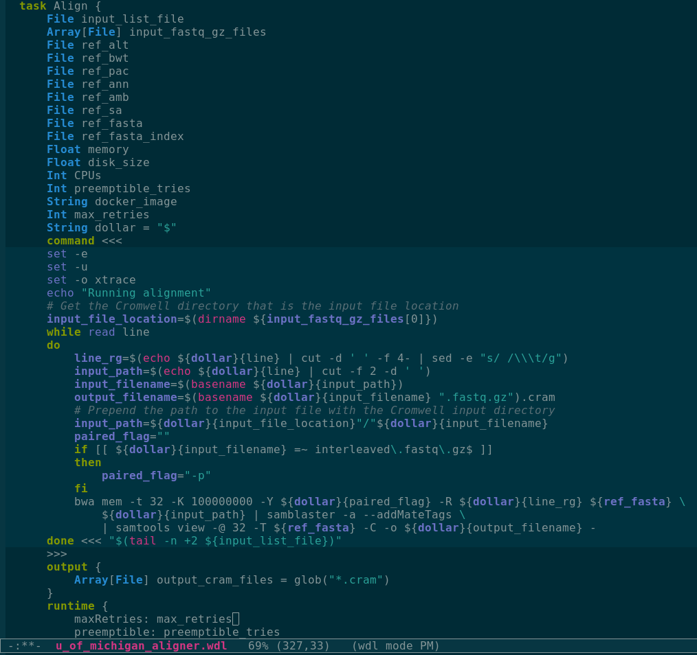

Workflow Description Language (WDL) in Emacs
Jul 15 2019 emacs wdlI recently started working with WDL files. The Broad Institute recommends using Sublime and the syntax highlighter that they provide. They also provide a syntax highlighter for Vim.
I started by looking for a solution in Emacs, my go-to editor.
Luckily there was already a WDL mode available that I just slightly improved.
I also made a polymode to complement it.
Both are available through MELPA as wdl-mode and poly-mode.
Other useful commands include (setq-default indent-tabs-mode nil) and the whitespace-mode to ensure consistent indents (see the Emacs’s WDL section).
wdl-mode
The wdl-mode package provides syntax highlighting and indentation. It was developed by Xiaowei Zhan.
I noticed that the indentation was not triggered in the presence of space(s) after the character that should trigger it ({, <<<, }, >>>).
Maybe this space is not supposed to be there in the first place.
Still some the files I was working with (or some of TOPMed’s workflows) had those sometimes.
I think it’s worth catching those so I modified the package.
It’s now a PR in the main repo.
If it’s not merged it could always be modified locally (e.g. in the .emacs.d/elpa/wdl-mode*/wdl-mode.el).
poly-mode
Starting from existing polymodes, I wrote one for WDL. The goal was to automatically switch to “shell mode” in the command chunks, mostly to get the appropriate indentation. The poly-wdl package is now in MELPA and I’m glad I could contribute to MELPA even if just with a simple and field-specific package.
Screenshot
Here is an example of part of a TOPMed workflow for read alignment available here. I removed empty lines and some comments to make it more compact.
